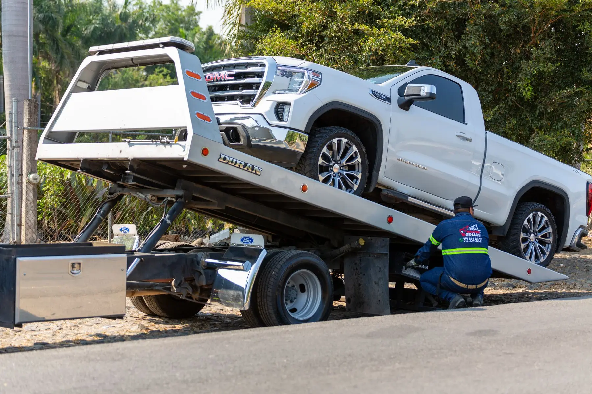

Won’t Drive
The vehicle cannot continue under its own power.

TOWING · RECOVERY / VEHICLE MOVEMENT
Towing is the vehicle-movement path when a vehicle cannot safely continue or needs transport. Start with the pickup location, vehicle details and destination. Towing is separate from 24/7 Roadside Assistance, and heavy/commercial towing capability remains call-to-confirm.
WHEN TO START WITH TOWING
Towing is the vehicle-movement path. If the problem can be handled through Roadside, that stays separate. If the vehicle cannot safely continue or needs transport, start with Towing.
The vehicle cannot continue under its own power.
Damage, a mechanical issue or another condition makes driving unsafe.
The vehicle needs to be moved to a shop, home or other destination.
If mobile assistance cannot solve the problem, move to the towing path.
TOWING IN THREE STEPS
The towing flow stays simple: confirm the pickup, vehicle and destination first, then move into dispatch and transport.
START THE TOWING PATHShare pickup location, vehicle, problem and destination.
The vehicle is prepared for transport using the appropriate towing process.
The vehicle is moved to the agreed destination.
ROADSIDE OR TOWING?
Roadside is for mobile help at the vehicle. Towing is for moving the vehicle. They should remain separate so the customer can start with the right service.
Confirmed 24/7 Roadside services include fuel delivery, tire service, mobile tire installation, jump starts and vehicle lockout service. Exact geographic availability is confirmed when you call.
OPEN ROADSIDE →Use Towing when the vehicle needs transport rather than roadside service.
START TOWING →REAL TOWING WORK
Start with the pickup location, vehicle and destination. Towing remains separate from Roadside, and heavy/commercial capability stays call-to-confirm.
VIEW OUR WORK →TOW TRUCK / DRIVER
HOOKUP / LOADTOW-TO-TIRES 4 LESS
When the vehicle is being transported for tires, rim work or mechanical service, the towing path can bridge into the appropriate Tires 4 Less shop-service page.
HEAVY / COMMERCIAL TOWING
Heavy, commercial or specialized towing can depend on the vehicle, equipment and current availability. Provide vehicle class/weight if known, pickup location and destination so the team can confirm whether the job fits.
Provide vehicle type, weight/class if known, current location and destination.
CONTACT FOR TOWING →DESTINATION MATTERS
The towing request should include the intended destination when possible. That can be a Tires 4 Less shop or another agreed location.
TOWING QUESTIONS
Quick answers about Towing, based on the current Tires 4 Less service and location rules.
Use Roadside for help at the vehicle. Use Towing when the vehicle needs to be transported or cannot safely continue.
Pickup location, vehicle year/make/model, what happened and the destination.
The confirmed 24-hour statement applies to Roadside Assistance. 24/7 is confirmed for Roadside Assistance. Towing hours are not currently published; use the Towing request path to confirm availability.
Heavy/commercial towing is call-to-confirm based on vehicle type, equipment and current availability.
If a Tires 4 Less location is the appropriate destination for the needed service, include that shop as the requested destination.
Use the Towing request path and provide the pickup location, vehicle details and destination so the team can confirm the next step.
NEED A TOW?
Have the pickup location, vehicle, problem and destination ready so the team can confirm the right towing path.